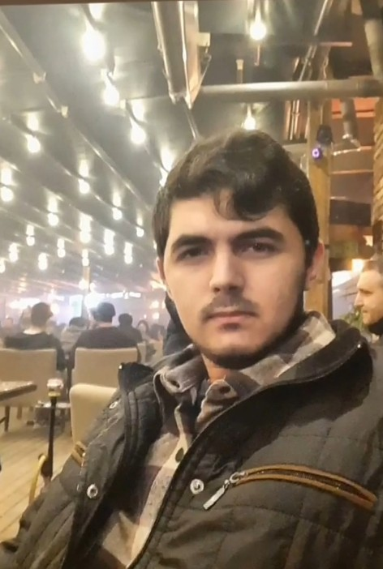

Ben Kimim?
Merhaba! Ben Yusuf İşeri, havacılık ve teknoloji alanlarında içerik üreten bir web geliştiricisiyim. Bu siteyi, uçak teknolojileri, yapay zeka, drone sistemleri ve dijital dönüşüm üzerine en güncel bilgileri paylaşmak için oluşturdum.
Üniversitede Bilgisayar Mühendisliği okuyorum ve teknoloji dünyasındaki yenilikleri takip etmeyi çok seviyorum. Amacım, hem kendim öğrenmek hem de öğrendiklerimi bu site aracılığıyla sizlerle paylaşmak.